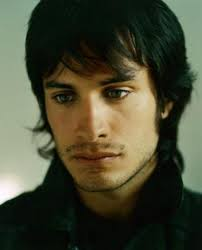
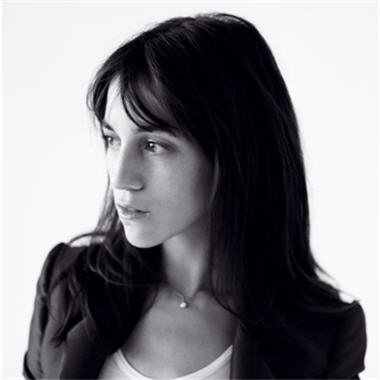

Gael García Bernal (Spanish pronunciation: [ɡaˈel ɣaɾˈsi.a βeɾˈnal]; born 30 November 1978) is a Mexican actor and producer. García Bernal is best known for his performances in the films Bad Education, The Motorcycle Diaries, Amores perros, Y Tu Mamá También, Babel and Coco, and for his role as Rodrigo de Souza in the Amazon Studios' web television series Mozart in the Jungle. He and Diego Luna founded Canana Films in Mexico City. García Bernal was nominated for a BAFTA Award for Best Actor in a Leading Role for The Motorcycle Diaries in 2005, and in 2016 won his first Golden Globe Award for Best Actor — Television Series Musical Or Comedy for Mozart in the Jungle. In 2016, Time Magazine named him in the annual Time 100 most influential people list.
Charlotte Lucy Gainsbourg (born 21 July 1971) is a British-French actress and singer. She is the daughter of English actress Jane Birkin and French singer and songwriter Serge Gainsbourg. After making her musical debut with her father on the song "Lemon Incest" at the age of 12,[1] she released an album with her father at the age of 15. More than 20 years passed before she released the first of four albums as an adult (5:55, IRM, Stage Whisper and Rest) to commercial and critical success. Gainsbourg has also appeared in many films, including several directed by Lars von Trier, and has received both a César Award and the Cannes Film Festival Best Actress Award.